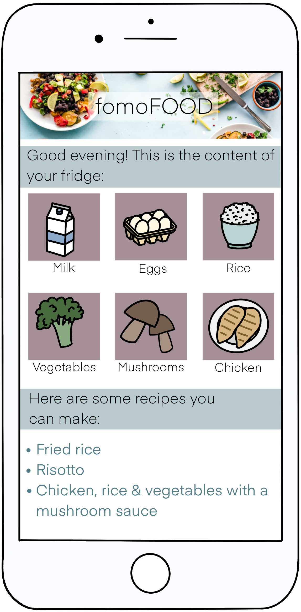
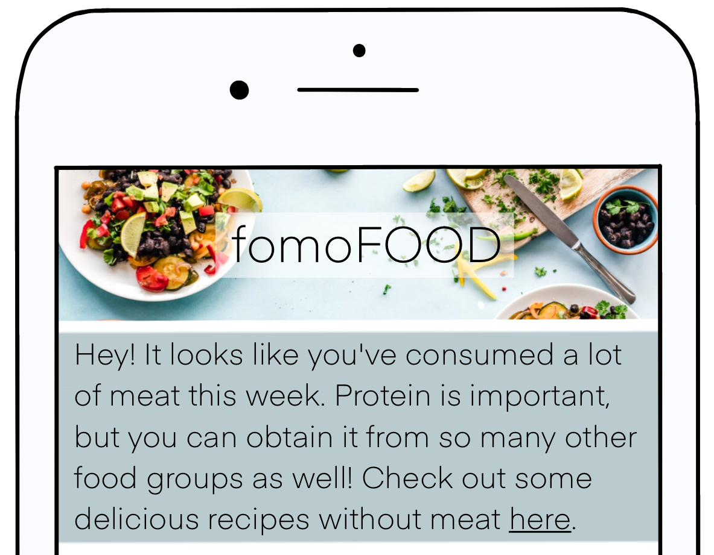
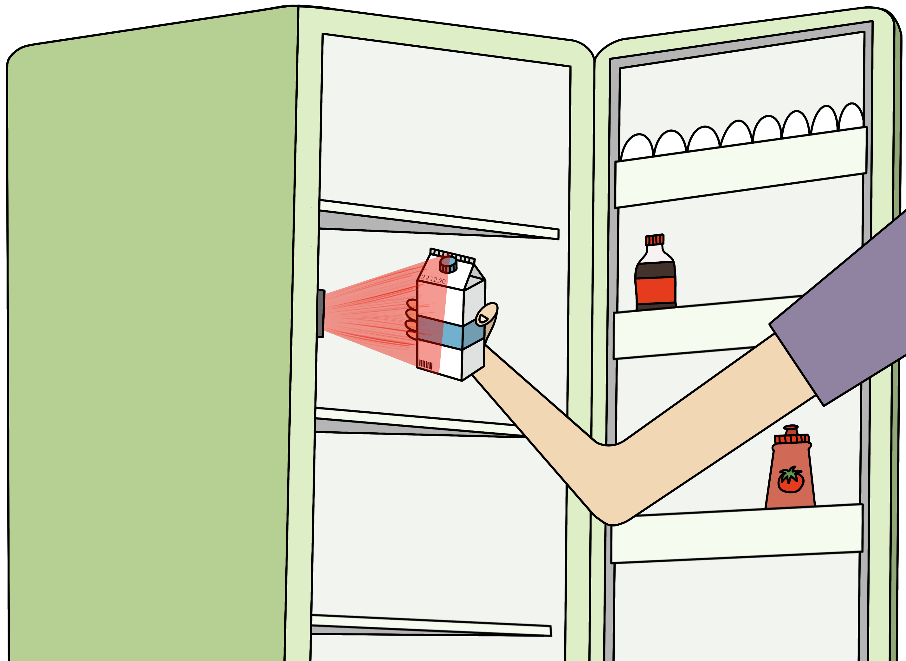
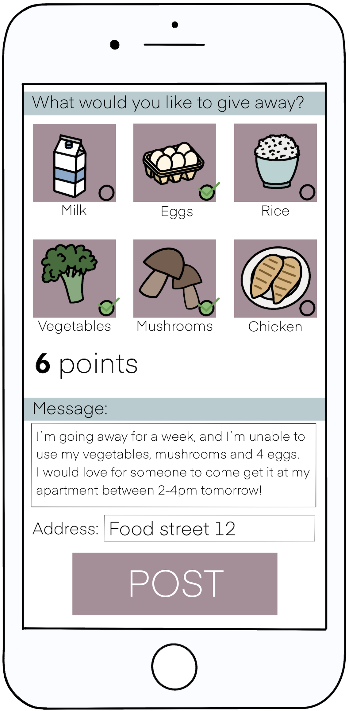
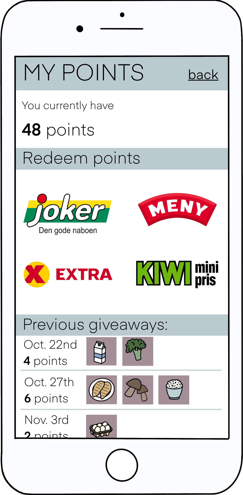

|
Saving the world is not always easy, but with our app we hope to make it a
little bit
easier for you. With this app, our goal is that you will never get rotten or mouldy
food in your fridge that must be thrown away.
|
 |
|  |
The app will give you a heads up if you’ve eaten a lot of meat in the past week, and suggest some vegetarian recipes. This encourages to meat free days, which is great for your health, your wallet and the environment. |
|  |
Our solution is to use a technology that can be added to something a
lot of us already have - a refrigerator.
|
|
We all know that it’s very easy to just throw your leftover food in the trash when
you’re going away, especially if you know that it’ll expire by the time you come back
home. Therefore, we wanted to add an option to give away your food so that it can be
of use to someone else, and so that no perfectly good food goes to waste.
|
 |  |